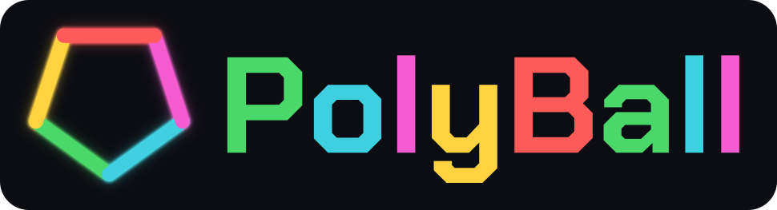

Press kit
Every note you hear, you played. One miss ends the run.
Download everything (zip, 1.6 MB)
Fact sheet
- Developer
- Abdallah El Belkasy, solo
- Status
- Closed testing on Google Play. Release date to be announced
- Platform
- Android (closed testing), with downloads for Windows, macOS and Linux
- Price
- Free, with ads and optional purchases
- Languages
- 15: English, Spanish, Brazilian Portuguese, French, German, Italian, Russian, Turkish, Japanese, Korean, Simplified Chinese, Arabic (Egyptian and Modern Standard), Hindi, Indonesian
- Engine
- Godot 4, GDScript
- Website
- abdaishere.github.io
- Contact
- abdaishere@gmail.com
Description
PolyBall is a one-thumb colour-matching arcade game. A ball falls onto a spinning polygon split into coloured segments. Rotate the polygon so the ball lands on its own colour. Every catch scores, builds your combo and speeds the game up. One wrong segment ends the run.
There are four modes. Classic is the endless climb. Music drops the balls on the beat of a backing track. Time is a race against the clock. Zen has no score and no fail. The polygon runs from three sides to sixty-three, and every side count keeps its own best score. A daily run gives everyone the same single attempt, and a global leaderboard ranks the best runs.
The music is played, not played back
No music files ship with PolyBall. Every note is generated live by an additive synthesiser inside the game. Each colour on the ring is a degree of the current chord over an eight-bar progression, so every match lands in key and the player's run becomes the melody. Hold a combo and the bass, arpeggio and lead enter one at a time on a swung beat grid. Miss, and they fall away. Sixteen voice recipes ship as alternative sound themes, and none of them change the colour-to-note mapping.
Features
- Four modes: Classic, Music, Time and Zen
- Polygons from 3 to 63 sides, each with its own high score
- A daily run, one attempt per day, the same for everyone
- A global leaderboard for ranked runs
- Colour-blind mode that stamps a distinct shape on every colour
- Right-to-left layout for Arabic
- Cosmetics earned by playing: balls, trails, segment styles, themes and cores
What money buys
Remove Ads, a starter pack, gems or coins. Those buy cosmetics, and coins also buy Combo Shields, so a purchase can extend a run. Any run a shield or an ad revive touched is marked assisted and never reaches the leaderboard. Nothing random is sold for money.
Screenshots
1080×1920. Click for the full-size JPEG.


Logo and icon
Free to use in coverage of PolyBall. Write the name as PolyBall: one word, capital P and B. Keep the ring-colour versions on a dark ground; on white, use the dark wordmark.
{kind=link}
{kind=link}
{kind=link}
{kind=link}
{kind=link}
{kind=link}
{kind=link}
{kind=link}
{kind=link}
{kind=link}
{kind=link}
{kind=link}
{kind=link}